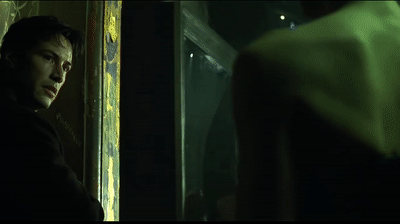
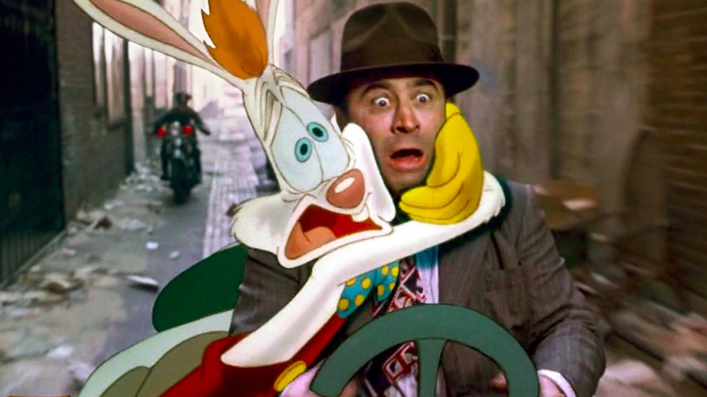
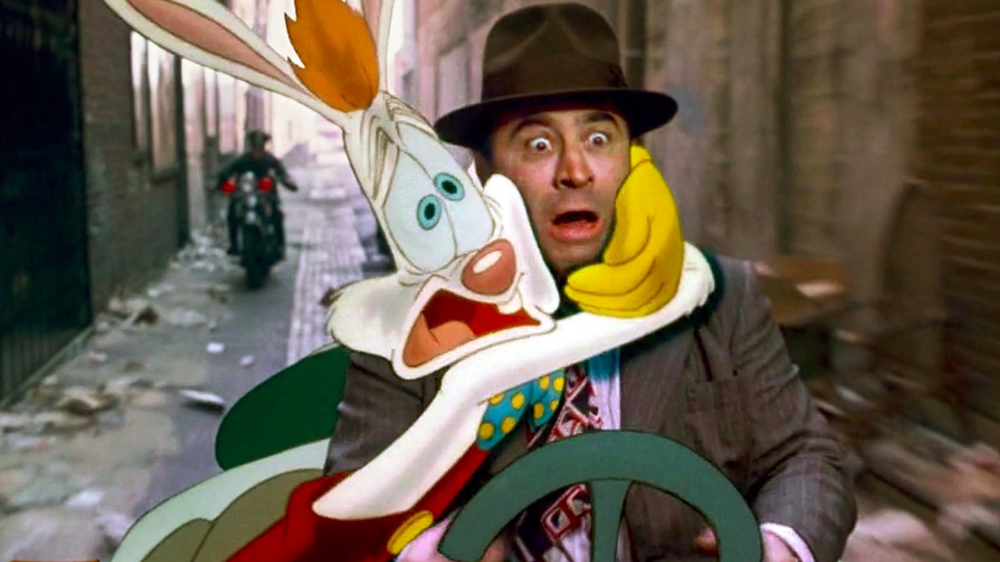

Cannon
@lady_ada_king

Virtual Spaces


liking or commenting on something
for fear that the platform would
out us to our employers or family?
to be "less queer" to avoid targetted harassment?
The next slide is very personal...
To the straight and the cis, queer experiences and trans bodies are inherently othered and sexualised.

In an age of conservative values towards sex and sex work combined with the view of queer people's existence as inherently sexual. The destruction of queer spaces follows.

FOSTA
What can be done about it?
Preserving our space in Social Media
- Be an ally to Sex Workers and be aware of their struggles, it mirrors our own.
- Fight for changes in our existing spaces
- Normalise displays of non-straight sexuality. Aka
ON MAIN
Creating Exclusive Queer Spaces
- Spaces where Queer people feel safe from harassment
- Don't have to fight to maintain a presence.
- We can maintain our own rules
- Have discussions which cannot be had in a public forum.
How exclusive tech events can foster an inclusive tech community — by @AroraXD
http://tiny.cc/exclusive-tech
Aside: Is anyone here in an exlusive slack channel at work?
i.e. "#lgbtq, #not-men etc?"
But what if my sci-fi childhood dream was a reality?
What if we could meet in virtual spaces?
the Web Today

 

on the Web??
brings Web Powers to XR.

Commercial XR is too focused on violent games and shopping.
It's frequently squandering it's potential for emotional connections.
We can set the tone for the whole platform by making Queer XR Experiences
Thanks for listening...
Be an ally to sex workers
Help build queer communities online and in the real world.
Perhaps try out building VR spaces
ON MAIN